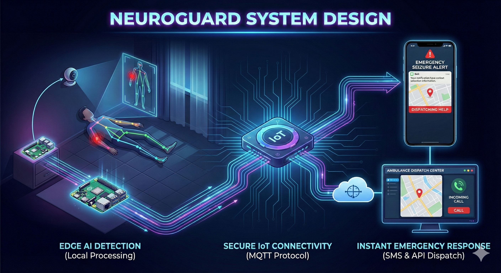

An autonomous, privacy-preserving healthcare sentinel. We combine lightweight pose estimation with instant IoT alerting to transform a simple webcam into a life-saving emergency dispatch system.
When seizures occur silently, manual discovery by caregivers is statistically too slow. Minutes lost translate directly to irreversible medical complications.
Current solutions demand a live video feed to cloud servers. This strips patients of their dignity and creates massive data vulnerability points.
Human monitoring cannot be sustained 24/7. Caregivers suffer from severe burnout attempting to maintain an impossible standard of vigilance.
We engineered a closed-loop edge node to directly neutralize these three vulnerabilities in real-time:
Beating the Time Deficit: The AI model detects seizure-like temporal patterns instantly, bypassing human delay to trigger an automated, sub-second dispatch protocol to EMS.
Eliminating the Privacy Tax: Our localized Raspberry Pi never records or streams visual footage. It purely extracts mathematical coordinate changes. What happens in the room, stays in the room.
Curing System Fatigue: The edge node operates 24/7 without exhaustion. It acts as an autonomous guardian, finally allowing family members and caregivers to rest.

Optical feed is ingested locally. No frames exit the local network.
Edge node maps skeletal nodes in real-time with sub-millisecond precision.
AI model scans coordinate vectors for seizure-specific temporal patterns.
Lightweight publisher fires an alert payload to the central broker.
Webhooks instantly trigger SMS alerts and secure API calls to EMS.
A powerful, industry-standard stack optimized for the edge.
Primary Edge Computing Node
Core Logic & Frame Processing
Real-time Pose Estimation
Lightweight IoT Messaging Protocol
SMS & Voice Emergency Dispatch
Standard Optical Sensor
Software Engineering
Computer Engineering
Computer Engineering
Computer Engineering